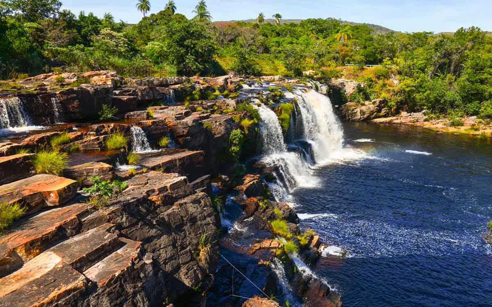
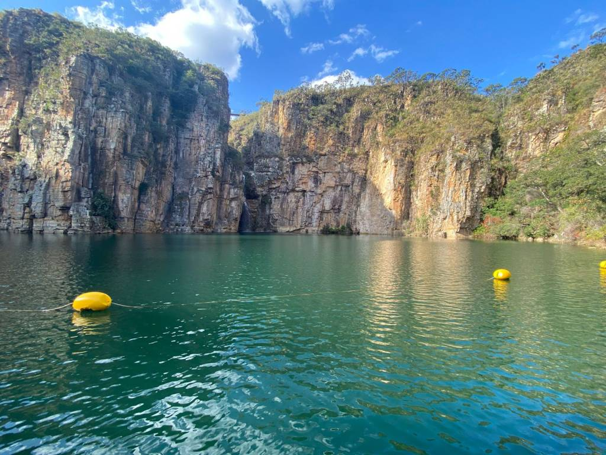
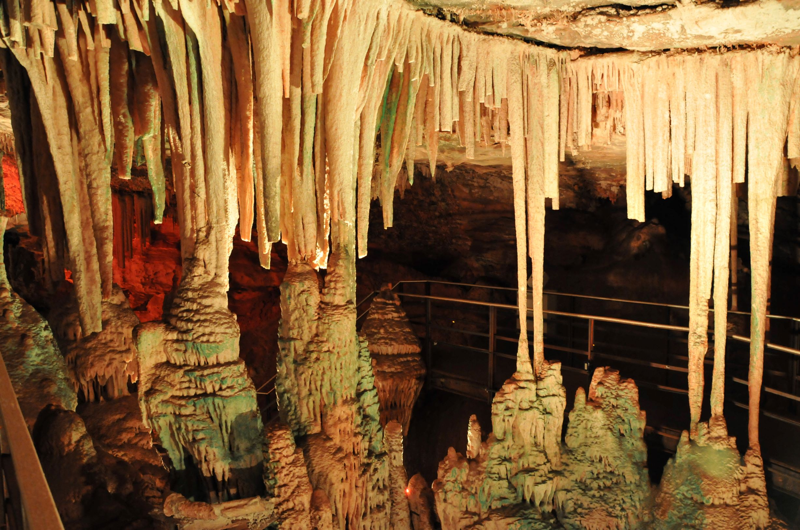
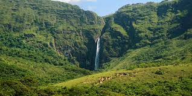
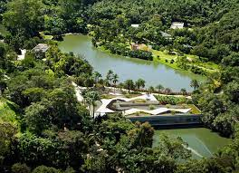
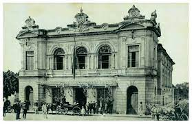
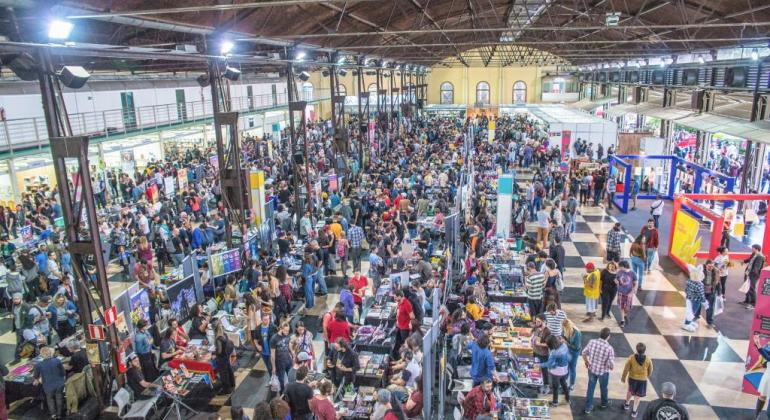

Conheça a história de Minas Gerais!
Minas Gerais começou em meio à corrida do ouro no século XVII, que trouxe prosperidade à região. Com o declínio do ouro, o cultivo de café se tornou crucial no século XIX. No século XX, o estado destacou-se industrialmente. Hoje, Minas Gerais é uma potência econômica, com rica herança cultural e culinária única, como o famoso pão de queijo.
Eventos Históricos:
Corrida do ouro (século XVII): A descoberta de ouro atraiu uma onda de migrantes, moldando as bases econômicas e urbanas
da região.
Expansão do café (século XIX): O cultivo do café impulsionou a economia mineira, levando ao desenvolvimento de
infraestrutura e ferrovias.
Industrialização (século XX): Minas Gerais tornou-se um polo industrial, destacando-se na produção de aço e mineração,
contribuindo para o crescimento econômico.
Figuras ilustres:
Aleijadinho: Escultor e arquiteto barroco, suas obras, como os profetas em Congonhas, são tesouros artísticos.
Guimarães Rosa: Escritor renomado, suas obras, como "Grande Sertão: Veredas," exploram a cultura e os sertões mineiros.
Juscelino Kubitschek: Ex-presidente do Brasil, seu governo é marcado pela construção de Brasília, a nova capital.
Pelé: Lendário jogador de futebol, nascido em Três Corações, MG, conquistou o mundo com seu talento no esporte.
Perfis importantes:
Carlos Drummond de Andrade (1902-1987): Poeta renomado, figura central da literatura brasileira do século XX, nascido em
Itabira, MG.
Milton Nascimento (1942-): Influente cantor e compositor, conhecido como "Bituca", contribuiu para a Música Popular
Brasileira, nascido em Rio de Janeiro, mas criado em Três Pontas, MG.
Tancredo Neves (1910-1985): Político mineiro, primeiro presidente civil após a ditadura militar, embora tenha falecido
antes de assumir o cargo.
Cândido Portinari (1903-1962): Pintor e muralista, suas obras retratam a vida rural brasileira; nasceu em Brodowski, SP,mas passou parte da vida em MG.
Culinária Mineira: Sabores Tradicionais:
Feijão Tropeiro: Prato feito com feijão, farinha de mandioca, linguiça, ovos e temperos.
Pão de Queijo: Deliciosa iguaria feita com polvilho, queijo e outros ingredientes.
Frango com Quiabo: Combinação de frango cozido com quiabo, tomate e temperos.
Doce de Leite: Sobremesa popular feita a partir do cozimento do leite com açúcar.
Belezas Naturais de Minas Gerais:
Serra do Cipó:
Uns paredões rochosos, cachoeira pra dedéu e uma flora que é de tirá o fôlego. É bão demais!
Lago de Furnas:
É o "Mar de Minas". Uma represinha que mais parece o oceano, com direito a prainhas e barquinho.
Grutas de Miraí:
É um espetáculo da natureza, com formações rochosas que parecem ter saído de um conto de fadas mineiro.
Parque Nacional da Serra da Canastra:
Lugar das águas, das cachoeiras e do famoso queijim Canastra, sô.
Artes e Cultura em Minas Gerais:
Inhotim - Centro de Arte Contemporânea:
Localizado em Brumadinho, Inhotim abriga um dos maiores acervos de arte contemporânea a céu aberto do mundo, com esculturas e instalações em meio a jardins deslumbrantes.
Teatro Municipal de Belo Horizonte:
Importante espaço cultural que recebe apresentações teatrais, musicais e eventos artísticos diversos, contribuindo para a cena cultural da capital mineira.
Festival Internacional de Quadrinhos - FIQ:
Realizado em Belo Horizonte, é um dos maiores eventos de quadrinhos do Brasil, promovendo a cultura geek e a produção artística local e internacional.
